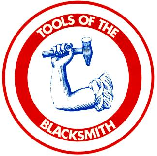
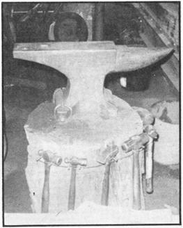
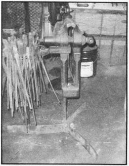
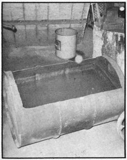
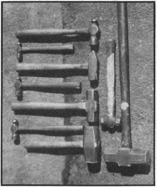
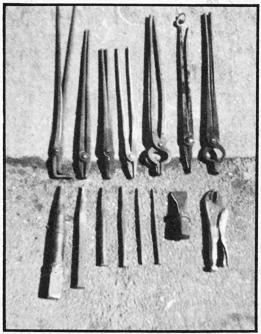

Well, folks, MOTHER was good enough to print my article on how to build a forge (NO. 35) . . . and the ole gal now thinks that some further information on blacksmithing might be valuable to readers who aspire to learn the skill.
The current widespread revival of interest in this old, old craft makes a lot of sense, what with so many poor-quality (and usually expensive) metal items on the market today. Folks seem to be waking up to the notion that they can "roll their own" when it comes to building in wood and stone, bricklaying, raising food, supplying their own fuel, and handling other functions formerly considered the work of specialists . . . and there's no reason why blacksmithing shouldn't be added to the list. After all, many an old farmer has repaired his own tools and other iron items without any help from the "experts" in town.
The ability to forge metal is one of the most useful skills a homesteader can possess . . . because there are very few items essential to basic living that can't be produced in a well-equipped blacksmith shop. I'm not-of course-referring to television sets, radio receivers, or any of the other electronic-age children which have become so much a part of everyday life in America. But the simpler things-door hardware, fireplace tools, kitchen utensils, woodworking equipment, even the nails that hold down the floor in your house-are within the grasp of the person who's willing to put some thought and work into their making.
Such an individual is not a reviver of a lost art, but part of a tradition which has never died out. The underlying principles of metal-shaping with forge and anvil haven't changed much over time (even though machines now provide the "muscle" behind the hammers in most cases). These articles on the equipment, fuels, and methods used in blacksmithing are for those of you who want to apply the knowledge to your own purposes . . . and, to help you get started, here's a list of the tools you'll need:
Ask someone to name the object which most symbolizes the work of the blacksmith, and he's almost sure to say, "An anvil". That's a good answer, since a solid backstop is absolutely essential to the shaping of hot metal under the blows of a hammer. Without this basic piece of equipment (whether it be a fine new unit, a chunk of wrought iron, or simply a rock) there could have been no such craft as mine.
Anvils come in a wide assortment of shapes and sizes, ranging from a tiny jeweler's version to some 500- and 600-pound giants which rest on the floor. Those of medium size are usually fastened securely to tree butts set into the ground, so they won't move around under heavy hammer strokes.
An anvil weighing 100 to 200 pounds is fine for all-purpose use. One lighter than 100 pounds will sometimes crack under a heavy sledge and is difficult to affix solidly to a stump. On the other hand, the forging of tools for use on an anvil of more than 200 pounds can be a backbreaking job.
Anvils can be found in nooks and crannies all over the countryside. The place to start your search, though, is the local junkyard. About ten years ago, when I was loading iron for a scrap dealer, we'd get in several good specimens every month . . . but they're becoming scarce, and now's the time to look for yours.
Very often, an anvil (and other tools, too) can be bought from a retired smith if he thinks you're sincerely interested in his craft . . . and that's not something you can fake. The metalworkers I've talked to have developed a feeling for their equipment somewhat akin to their regard for close friends, and they can sense a disrespect for good tools a mile off. Another warning: Never try to "put the rush" on any former blacksmith for his gear (usually a sure way to get yourself escorted off the premises).
Sometimes you can find tools by advertising on local radio. Small stations frequently have programs entitled "Switch and Swap", "Trading Post", or the equivalent . . . on which goods for sale or trade, or requests for items wanted, are announced free of charge. I picked up much of my equipment this way, and had an outstanding piece of luck I'd like to tell you about.
On one occasion when I put in a request for smith's tools on a program in my hometown, I received a call from an old fellow who invited me over to look at his set. After two hours of shop talk, we concluded the sale. Both being happy at "getting the best of the deal", we then talked some more, and I happened to ask the seller where he had gotten the tools in the first place. Surprisingly enough, it turned out that he had worked for my great-grandfather and had later bought the old man's shop when great-grandad could no longer carry on the business! That knowledge made me doubly happy with the transaction, and the family anvil has become my prize possession.
Well, I can't guarantee you a coincidence like that, of course, but-sooner or later-you should be able to find what you're after. Advertise in the local paper, ask your friend to keep a sharp eye out, and-most important-look for yourself. Anvils turn up in the darndest places and perseverance in seeking them will pay off.
Although new units run $1.00 or more per pound, a pretty decent used anvil can be had for between $15.00 and $50.00. That sounds like a lot of bread for a hunk of metal, but your purchase-if well cared for-will last for generations and is well worth the outlay in the long run.
Actually, the present-day anvil is a good deal more than a hunk of metal anyhow . . . it's a fairly sophisticated piece of equipment which has evolved over a very long period of time. You might as well learn the names of its various parts at this point, to avoid confusion later as you learn their uses.
First, the anvil's pointed tip (usually fairly soft and shaped like a rounded cone) is called the "horn" or "beak" and is used for some curving operations and for the process of drawing out metal.
The "face"-the very hard, flattened top surface-is where the majority of forging takes place. This area usually contains two holes: the round "pritchel hole" over which punching operations are carried out, and the square "hardy hole" used to hold several tools (including swages, fullers, mandrels, and the chisel-like "hardy" from which it takes its name).
The last piece of anvil nomenclature you'll need to know for simple forging is the "chipping block". This is the small, flat surface between the horn and the face. The area is used whenever a piece of metal is to be cut completely through with a chisel (to prevent the tool's hard tip from striking and possibly injuring the face of the anvil).
Before you buy any anvil, you should be aware that the best ones are made of two grades of metal: they have a wrought-iron body and a welded steel face. Careful examination will sometimes reveal a line between the face and the body (main portion) where the two grades of iron have been joined. This is an assurance of high quality.
Less useful cast-steel or cast-iron anvils can be recognized by the small raised lines left on their surfaces when the metal was poured into the molds, or by grinding marks where these lines were removed. Anvils of this type should be avoided whenever possible, as they have a tendency to chip during use.
Here are some further guides to help you size up a possible purchase: An anvil's face should be almost free of nicks and hammer marks, and its edges square and sharp. The length and shape of the horn isn't a major consideration as long as it hasn't been broken off altogether . . . and minor cuts and notches in that area don't amount to much either, since the beak is only used in "roughing out" operations. Again, it isn't important if the chipping plate is obliterated by hacks and gashes.
OK, let's say you've bought your anvil and are about to set it up. The first step is to procure a large section of tree trunk-the bigger the better-to serve as a base. A stump 2 feet in diameter is a good size, since it allows room on top for extra hammers, chisels, tongs, etc., beside the anvil. Such chunks of wood can be had for the asking from the tree trimmers who work for power companies.
I don't sink my anvil stump into the ground, for a couple of reasons. The first is that no matter how carefully you calculate the placement of the anvil in your shop, the site usually winds up being wrong the first time. Then you're faced with the problem of having to drag a very heavy piece of wood out of a fairly deep hole in order to relocate it. In my case, a movable unit is important anyway because the anvil support goes with me when I give demonstrations of blacksmithing at craft fairs.
There are two schools of thought as to the correct height for an anvil. Either can make sense, depending on what type of work you plan to do.
According to the first theory, the stump is set low enough so that-when the anvil is placed in position and the smith stands beside it in a relaxed posture-the knuckles of his hand just brush the face of the work surface. This arrangement allows the full fall of the hammer to be utilized and does quite well if most work is of a heavy nature. In practice, though (mine, anyway), the user generally ends up hunched over the anvil trying to get close enough to the job to see what he's doing.
The alternative is to cut the stump so that the anvil face is almost belt-buckle high. Some of the force of your hammer blows is sacrificed this way, but the loss is offset by the fact that you can work longer without tiring your back. This is the method I advocate. If several people of different heights are to work at one anvil, though, a compromise is in order.
It's also important to place the anvil in a good location relative to the site of the forge . . . usually within one step, to reduce the time and distance involved in transferring hot metal to the work surface. In my shop, the blower for the forge is located directly to my left as I face the forge, and close enough so I can move the metal in the fire while cranking the blower handle. The anvil is placed directly to my right and about one step away . . . with the horn pointing to my left as I work (since this is the most comfortable arrangement for me).
A left-handed person might be able to work a little more easily if the whole setup were reversed: the blower placed on the right to let the most skillful hand manipulate the metal in the fire, and the anvil on the left with the horn pointing to the right. In any case, these suggestions are only guidelines. Feel free to experiment with any other layout which you feel may be better for you.
When you've chosen what seems to be the right location for your anvil, you can secure it to its stump in a variety of ways: with spikes (which you can make) driven into the wood and bent over the legs, or with lag bolts or spikes passing through holes in metal bars which cross over the feet. However it's fastened, the anvil shouldn't move at all. It's very frustrating to have your main work surface jiggling around when a job which requires great concentration is under way.
Before I leave this subject, I'd like to deliver a warning against pounding the face of an anvil with a hammer. Both surfaces are very hard and brittle, and when the two meet with any force, something is likely to give . . . a dangerous occurrence because pieces chipped off either one attain the velocity of bullets.
Once a friend of mine accidentally struck my anvil with a hammer and a small bit of metal zipped across the shop, pierced several layers of heavy winter clothing, and continued half an inch into my flesh. Luckily I was more indignant than hurt, but if that chip had hit my eye I would most certainly have been blinded.
OK, accidents will and sometimes do happen . . .. but I've seen people I didn't even know walk into my shop and start to pound on the anvil with the hammer just to hear the metal ring. Most of those individuals have received an instant education on the danger of their act, and on the etiquette of tool handling in general.
It's quite possible to do smithing with just forge and anvil . . . but once you've become addicted to the use of a good vise, you won't want to be without this tool, too.
These are two basic types of vise.
The first-the machinist's vise-is normally made of cast iron or steel, with removable jaws, and is commonly seen bolted to a bench in a garage or repair shop.
You're much less likely to run across the second-the leg vise-unless you visit a smithy or old machine shop. It's an odd-looking contraption, named for its very long "leg" which reaches to (and usually into) the floor. Whereas the machinist's vise depends for support on the bench to which it's fastened, the leg vise derives a great deal of additional strength from its built-in stand. Another difference is that the old-time clamping tool is made of wrought iron and will stand up to pounding that would crack a modern cast-iron unit.
There's also a third type-a foot vise-which closes with pressure of the foot on a pedal at its base. The advantage of this design is that the clamp can be opened and closed very rapidly without the use of the hands. It affords little holding power, however, and should be considered as an auxiliary rather than as the main vise in your shop.
You shouldn't have much trouble finding a suitable vise (once again the first place to look is the junkyard). Remember, first of all, that a large or-medium-sized example of whichever type you decide on will be more useful than a smaller unit. Also, before you make a purchase, be sure to screw the jaws completely open and closed to make certain they're operable . . . and see that they're in fairly good shape, especially if much delicate work is to be done. How essential this is depends on the type of instrument you're looking over. The jaws of the machinist's vise are generally very hard and almost impossible to reshape properly unless you have access to a grinder of some sort. Those of the leg vise, however, are softer and can be reworked with a file and lots of elbow grease.
The vise, like the anvil, should be placed within a step or two of the forge, and for the same reason: to save time and energy in the transfer of hot metal. I can relocate mine any time I want to, because it's a freestanding unit . . . a leg vise with three spring leaves welded to it and radiating outward much like the airfoils of a three-bladed airplane propeller. If you, too, would like a portable vise (there are advantages, just as with a movable anvil stump) and don't have access to a welder, simply bolt or spike the device to a large tree section.
Matter of fact, you'll find all sorts of uses for stumps. I have four in my shop: one for the anvil, one for a small vise (this tree butt is cut into three sections so that pieces may be removed or added to lower or raise the instrument), one with various indentations cut into the top to form copper, brass, and sheet metal bowls, and one on which I've mounted a small shear. (The shear, incidentally, cost me $6.00 at a scrap yard recently. New, such items run $50.00 or better.)
There's no sweat finding something to fill the bill here: any good-sized container that will hold water does fine. A 55-gallon drum works very well and can sometimes be had for nothing from the dump.
I found myself a free barrel, laid it on its side so that the finished container would have a larger opening, and cut off about the upper third with a torch . . . after [1] checking to make sure the drum contained no explosive substance and [2] filling the barrel with water to drive out any fumes that might have ignited despite the first precaution. If you don't have access to a torch, you can do the cutting with hammer and chisel.
The water in the quench trough is used not only to cool metal, but to partially douse the forge's fire when the blaze has become too large. Fuel is expensive, and a little water judiciously applied can save a lot of coal or charcoal.
Accordingly-although the trough's location isn't critical-it should be placed as near the fire as is feasible. Mine is directly behind me as I stand at the forge . . . close enough to save a good amount of time and walking in an average day's work. I placed a couple of rocks on either side to keep the tank from rolling . . . but, if you feel ambitious, you may want to build a real stand for your water container.
Tools are to a smith what paints are to an artist. When white or blue or red are unknown, the colors are never missed . . . but when one or all are acquired, the addition to the palette becomes a source of inspiration.
It's just the same with my craft. For a long time I blundered along with the equipment I had, thinking it would be a waste of effort to make tools I'd use only occasionally. I've changed my. mind, though, and I'm glad I did. I now find that when I make a special implement to help with one specific task, the gadget comes in handy at all sorts of unexpected times.
You'll find what your own particular needs are as you go along . . . but meanwhile, here's a list of basics to start you out:
HAMMERS. A good hammer with a properly fitted handle is a must for quality forging . . . and, conversely, learning to work steel is difficult enough without the handicap of poor tools.
Hammers are expensive bought new but, fortunately, are available secondhand. Flea markets, antique shops (sometimes), and tool auctions are fine hunting grounds, as is (I won't say it again-promise-if you'll swear always to keep it in mind) the good old junkyard.
Most of you who have done any mechanic work or just plain tinkering are familiar with some of the basic types of hammers . . . especially the ball-peen, so called from the round shape of the end opposite the flat face. There are also cross-peen and straight-peen hammers. In both cases, the peen is tapered to a blunt wedge so that the tools look something like small splitting mauls. The difference is that on a straight-peen hammer this edge runs parallel to the handle, while on a cross-peen hammer the tapered face is perpendicular. Finally, don't forget the sledge . . . that big, heavy, double-faced brute which sits neglected in a corner whenever possible.
As far as usefulness is concerned, ball- , cross- , and straightpeen hammers run a pretty close race. For a beginner, weight is more important than type. Hammering is fun for a while, and then turns into a heck of a lot of work . . . so it's important to find a tool that will do the most with the least expenditure of energy.
Unless the novice has done a lot of pounding previous to beginning blacksmith work, he'll be best off with a hammer weighing 24 to 32 ounces. If you have forearms like Popeye's, you won't find a 3-pounder too heavy to handle . . . and eventually you'll want to graduate to a 4-pounder, a really fine weight for all types of work. For exceptionally tough jobs of short duration (mostly drawing out heavy stock), I have a short-handled 8-pound hammer for onehanded use. In reality, any work that requires a hammer heavier than 4 pounds also requires a "striker" (helper) . . . but assistants, I'm sorry to say, aren't always available.
When you're considering the purchase of a hammer, make sure its face and peen contain no chips which will leave marks on hot metal. (The face, of course, can be redressed if you have a grinder.) The handle should be of good wood-either hickory or ash-and properly fitted and wedged.
TONGS. Tongs are basically very strong, fireproof extensions of the hands and can be extremely clumsy to manipulate at first. Once you get used to them, though, you'll find that about 200 pairs-all shaped differently-would make life in the shop a lot easier.
Tongs are often named after the object they're made to handle (link, belt, horseshoe, and hoop . . . to name just a few). It's less important, however, to remember the terms than to use a pair that grips your work tightly. A hammer blow on a loosely held piece of metal can send the hot chunk of iron flying.
In an effort to prevent such accidents, some tongs used to be made with a ring running through a hole in the end of one handle. This catch could be slipped over the other handle after the metal was gripped in the jaws, and thereby effectively prevent the tool from opening. The result was a sort of old-timey vise-grip.
(Modern vise-grip pliers, by the way, are kind of all-purpose tongs which can be adjusted to fit a large selection of objects. Their only drawback is that they have short handles.)
Tongs can be obtained from the usual sources of used equipment, but are sometimes very dear. Don't despair, though . . . you can make your own for very little money..
ANVIL TOOLS. As I've already mentioned, several articles fit into the holes in the anvil face where they're ready for use in a variety of operations. The only one we need be concerned with now, however, is the hardy . . . an upright chisel, kept in the hole of the same name and used to cut hot metal.
PUNCHES. Punches are essential for making holes in metal (unless you have access to a drill). Eventually you may want a whole set with points of different shapes, but for now one round and one square punch will suffice. It's convenient for each of your basic punches to measure about 12 inches long, so that the hand holding the tool remains a comfortable distance above the hot metal being pierced. Both should be 1 inch thick for half their length, and then taper smoothly to a point about 1/8 inch across. There are only a few occasions when you'll need to make a hole larger or smaller than permitted by these dimensions.
FILES AND HACKSAWS. Finally, get yourself a large coarse file and a hacksaw, and you'll have all the tools you need to begin forging.
In a future article, I hope to outline the building and care of the fire and some of the basic forging operations. Meanwhile, good luck with your tool hunting!
|
 |
 |
 |
|
 |
 |
 |